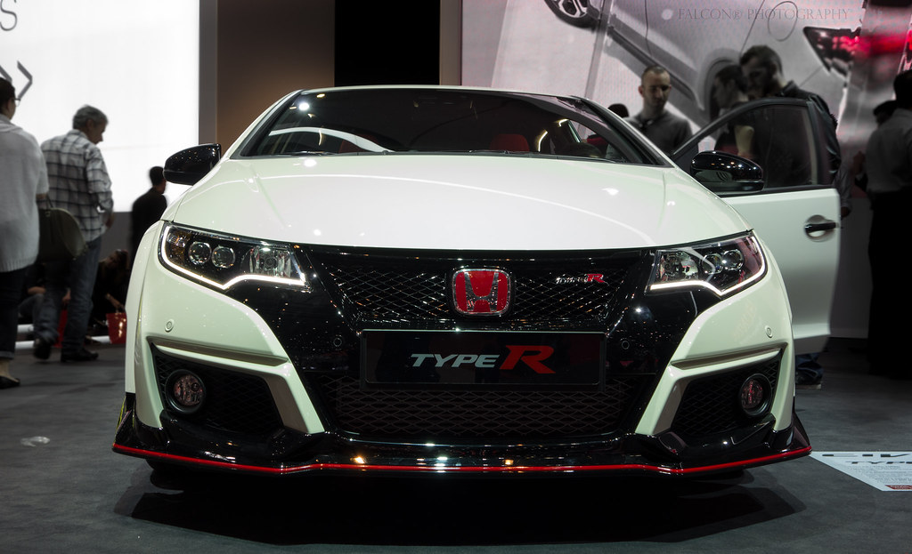

College
Best Cars to Travel To Your Instate College
Tesla Model Y

"1X7A6211", By: Alexander Migl,CC-BY-SA 4.0 License
Tesla's electric cars have base price ranges between $42,990-$119,990 in 2023 depending on the model. The Tesla model Y is a great choice to pick when driving to your instate college! The seating is very comfortable, and you have your own seatwarmers, plus a screen were you can adjust the tempature,play songs, play games, and a map were you can navigate your way wherever you want to go. The model Y has between 303-326 miles. If you choose the long range option when buying the car, you will have 326 miles on you car, but if you buy the peformance option, you will have 303 miles on you car. This milage will 100% help you drive to your instate college. You may have a few stops depending on how far you college is.
Honda Civic
"New Honda Civic Type-R 2016", By: Falcon_33, CC-BY-SA 2.0 License
The Honda Civic costs around $22,000- $44,390, and is said to be the safest car to drive in. Also very comfortable to drive in, so you'll never break a sweat. Another plus side is that it has a type R option which is more sporty and powerful. Either option gives you maximum saftey, comfort, and enjoyment. The Honda Civic is a popular series of automobiles that has been manufactured by Honda since 1972 .Initially launched as a two-door car model, the car had good interior space and was very fuel efficient, reliable, and environmentally friendly. Over time the Civic has undergone multiple redesigns,making it one of the all-time best-selling automobiles in the world. Today, it occupies the compact car class and is positioned between the Honda Fit/City and Honda Accord in Honda's car lineup.